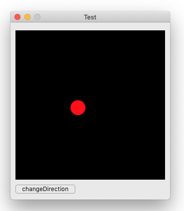
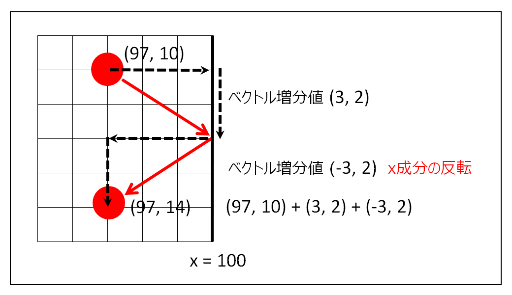

跳ね返るボールのアニメーション
Timerの定時間隔起動を利用してアニメーションを実現する
macOS Mojava 10.14.6 / Xcode 11.3.1 / Swift 5.0

画像をクリックすると動画になります。
実装のポイント
図形（赤いボール）はNSViewクラスのdrawメソッドにより表示される。drawメソッドはタイマーの定時間隔起動により、ごく短い間隔で起動するように指定する。
１回の図形の移動は一つのベクトルとして表現することができる。ベクトルの距離は速度に相当する。
本例では、ベクトルの距離を４ピクセル、処理の起動間隔を100分の1秒としているが、この組み合わせあたりが限界かもしれない。起動間隔をいくら短くしても処理のオーバーヘッドがあるので数字通りに速くなることはない。
ボールが壁にぶつかったとき、その軸側のベクトル成分の正負を逆転させることでボールの進行方向を変えている。正確には、次のスパンで壁にぶつかると判断した時点で方向を切り替えるので、ほとんどの場合、ごくわずかの差ではあるが壁に到達する前に方向転換が行われることになる。（少なくとも見た目ではわからない）

ビューのサブクラス
AppDelegate